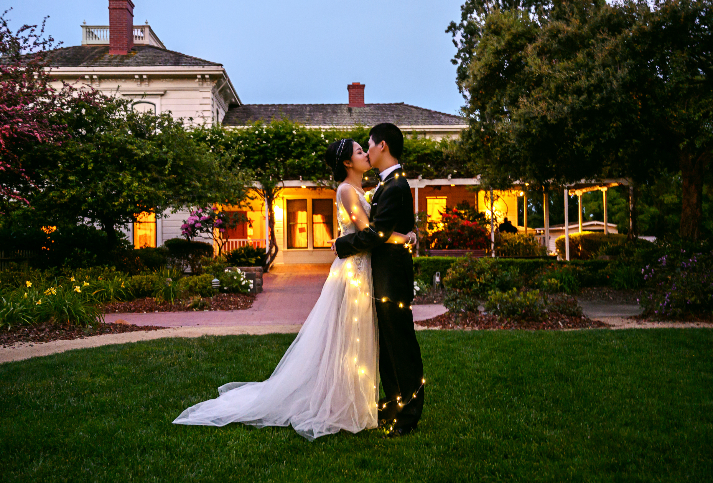

跳票跳习惯了。。😢 年度总结和书籍的年度推荐在这儿。
↑ 今年的 BGM 选的是新裤子的《生命因你而火热》，以火热为题，曲里透着的却尽是 party 终曲的哀伤、以及一丝丝苦尽甘来的微光。当时节目里直接就把我唱哭了，哪知与下半年的心境竟如此贴切。有些丧了，有点咸鱼了。
回顾 & 远眺
几十年后回顾时，2019年铭记的大事件或许只有五月的婚礼和八月的滚滚。

年前就领了证的我们在05/17跑到三藩的某个古建筑里在十几位小伙伴的见证下举办了我们的婚礼。Bing 操劳甚多！在伴郎伴娘们以及所有小伙伴的热心帮助下，当天的些许手忙脚乱最终都成了特别的回忆！兴起，附上拙作一首：
《刺猬》
拔剑四顾的小刺猬，
单在这儿安心袒露肚皮，
化作无法远行旅人的双眼，
带来整个宇宙的风情，
也曾被你尖刺扎疼，
但想起的终是托付肚皮的真心。

滚滚也早就对我们袒露肚皮。从他08/12降临的这天至今，滚滚给家里带来了无尽的欢乐！每当生活所迫快要失控的时候（PS：诡秘梗），滚滚就是我们的锚。
一如跳票了整个秋季学期的月结和跳票了10个多月的公众号 & Podcast 半夜醒来（看这里），2019这一年我有许多失期，「失期，法皆斩」，希望已经到来的2020能像滚滚一样发出坚定的吼声，重整旗鼓，
凡事有交代，件件有着落，事事有回音！🙏
希望 Bing 和爸妈们都身体健康，希望滚滚快乐成长！
接下来是例行的书、影、游戏、播客推荐时间。
读什么读

19年下来一共读了53本书，回归了有记录以来的历史平均水平。绝大多数都是微信读书的app上看的，app持续好评。除了微信读书平台上没有的书目外，Kindle已经完全被束之高阁了。
| 2015 | 2016 | 2017 | 2018 | 2019 |
|---|---|---|---|---|
| 58 | 79 | 64 | 25 | 53 |
和去年比有显著回升的一大原因是下半年开始的听书。原本在3月搬家之后更多在家吃饭了，餐间阅读时间也转变为餐间观剧时间。但下半年在播客都补完之后我开始了听书。发现只要开始能听进去，一些原本攒着一直没翻开的书或许就能接下去读完了！！我要收回曾经的「只有部分非虚构类作品才适合听」的过于保守的论断，朗读者自身的功力至关重要，与文章本身的叙事结构也有很大关系。
微信读书上其实有不少真人录制的全文朗读音频，多谢平台把控的好，上线的音频质量都很高。这里要专门夸一下各大出版社：中信出版君、译文有声、中版君、熊猫君、湛庐阅读、蓝狮子FM，全文音频出得那是又多又好！
相比之下，喜马拉雅上的音频朗读资源多得多，但大平台难免良莠不齐，稍稍对比就听得出来，科班出身练过的主播真的不一样！话说回来，喜马拉雅真该好好向不同的 podcast app 学习一番用户体验！自定义倍速播放、播放队列管理、自动下载等等等等都没有。但是平台总是可以傲慢地不去做这些，毕竟他们的核心生产力是平台上的广大中部内容输出者，人在平台在。
今年最喜欢的偏虚构类文学作品有：
《你当像鸟飞往你的山》，当是今年最喜欢的一本了，内容好，文笔也好。或许明日太阳西下倦鸟已归时，你将已经踏上旧时的归途。英文版书名是 Educated；中文版书名是作者塔拉亲自选定，出自圣经·诗篇 Flee as a bird to your mountain，各有韵味。成长于极端保守的家庭，塔拉在控制欲极强的父亲有暴力倾向的大哥影响下长大，从小没上过学，17岁偶然去了杨百翰大学，才开始一步步接触外边的世界。候鸟北归，塔拉从杨百翰到剑桥到哈佛，离现代社会越近就离家越远，与家庭的羁绊却未减半分，时不时又会受到父亲这座大山的吸引、放弃自我。这本书的层次可比简单地夸赞一番教育益处多多了，它是塔拉的自传，描绘着少年塔拉、青年塔拉的成长，记录着塔拉与父亲为代表的家庭的纠缠、决裂与新生。
《毛毛：时间窃贼和一个小女孩的不可思议的故事》，来自于亲王冷门书单的推荐，给个5星甚至6星丝毫不为过，这是给当代成年人看的童话故事。忙、没有时间、焦虑、没有兴趣，这些情绪我是深有体会了，能被毛毛稍微警醒一些，很满足。这本没有电子版上架，但是微信读书上有主播全文朗读得非常棒，嗯比喜马拉雅上的高出至少两个档。
最后，《诡秘之主》当然值得拥有姓名！去年的年结里就吹爆它了，今年让知乎来继续吹吧！还有半年左右这本就要完结了，这几年每年都推了作者乌贼的书，目测他的新书明年也能上榜。
在今年偏爱的非虚构类作品里，历史区依旧是大头：
《穿越百年中东》，把中东大舞台的历史抽丝剥茧娓娓道来，整理得井井有条不紊，对作者印象很不错。听书就是从这本开始的，中信的音频资源效果很棒。当时还在看另外一本《黑旗 : ISIS的崛起》，那本感觉又臭又长，对比之下更觉得这本不错。
《丝绸之路：一部全新的世界史》，以中亚近东千百年的历史为线索，实质是在介绍世界史，补上了不少缺口，很喜欢，都不忍心倍速播放，就像一个精致的大型纪录片在耳边慢慢环绕。
《命运攸关的抉择：1940-1941年间改变世界的十个决策》，这本是年初看完的，这类探究决策原因以及其它可能性的讨论我很感兴趣。我们的第二期 podcast 做的就是这个主题。
《显微镜下的大明》，亲王新作，从大明时期有丰富史料支撑的民间故事着手，一窥大明真实生活的一角。一开始的几个案子都是读书人、地方府县之间你来我往的争端，古人都不傻嘛，我看得很欢乐。但后来看到朱元璋精心设计的黄册制度如何渐渐流于形式、官僚系统如何抓住各种机会加税抽税、胥吏如何在各种事情上抽成吸血，画面就渐渐变得沉重起来。所以再良好的制度一成不变下去早晚也要变成枷锁，所以有生命力的系统必须自发演进，绝难顶层设计。亲王借助坚实的史料基础，恰好避免了过往中长篇中谋篇布局的不足，摆脱了以往的戏说视角，效果反而升华了。
《浩荡两千年：中国企业公元前7世纪-1869年》和《跌荡一百年：中国企业1870—1977》，久闻大名的吴晓波系列。我们走了不少弯路交了不少学费，正是对这片土地爱得深沉，才对这些苦难与伤痛愈加扼腕。另外我长大了才注意到，张謇作为状元，甲午之后下海经商实业救国，以前在历史书上看了没啥感觉，现在多少能体会到这个选择背后的勇气与坚决，很感动，很敬佩。
《论中国》，基辛格的大作，看完对这些历史人物的能力都心生敬佩，NB，真NB，都NB！翻了翻 goodreads 上的评论，不少人不喜欢是因为太亲中了。。基辛格的另外一部《世界秩序》我也翻了，不是很喜欢，觉得那儿只是把西欧、中东、亚洲、美国所倡导的世界秩序罗列了一遍，没有看到啥新东西。
今年剩下的非虚构类作品喜欢列表居然都是生理相关的：
《众病之王：癌症传》是今年的一个惊喜，作者已加入必追名单。厚重、庄严，书里不仅详尽展示了不同时期的医学思潮，更借助癌症这个线索描绘了政治、文化的时代切面。比如登月成功后一批科学家想要借势要个大 funding 治愈癌症（当时癌症细胞原理都没搞清楚就想着彻底治愈）；比如60年代女权主义的发展倒逼了医学界对乳腺癌治疗手段在80年后的仔细检验；比如70年代肺癌对香烟产业的深厚影响。这些也是全书最有意味的地方，癌症本身已经分量十足，借助癌症为线索共同展现医学与社会更是回味无穷。作者后续还有一本《基因传：众生之源》，前半部分优生学等部分的介绍很新奇，后半部分的内容却渐渐变得稍许平淡。
《坏血》，这本介绍硅谷吹破牛逼公司 Theranos 的书阅读体验极佳，手不释卷！前半部分铺垫了各种「这TM也可以？」的怒气值，然后随着身为记者的作者下场开怼水银泻地。Theranos 这公司也是神奇，15年如一日地吹牛逼，坑大到永远也填不上，但还总能拿到投资，可见大佬站台（甚至还有基辛格）是真的有用。
《血疫》，埃博拉病毒！第一部分描述扎伊尔埃博拉病毒的发现过程非常抓人非常好看！！后边就一般了。
《活下去的理由》，是无比真诚的心路历程，作者不容易啊。
□
后边还有游戏和播客的年度推荐榜单。和去年的年结一样，博客引擎生成的网页被直接截断了。。应该是遇到了长度限制的bug😓。请移步下期。